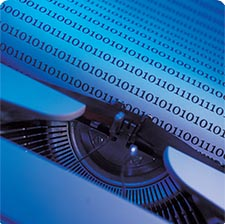
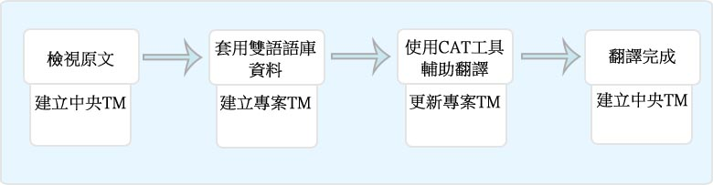
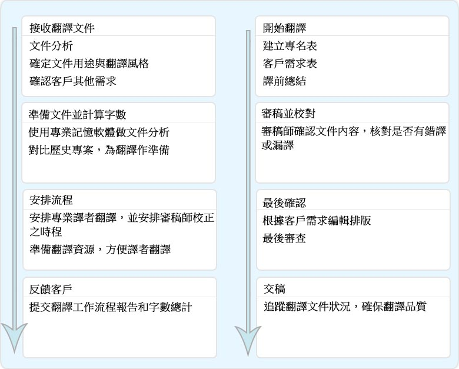

翻譯技術
-

后冠科技翻譯技術
后冠科技翻譯社使用電腦輔助翻譯（CAT）來完善我們的翻譯作品，CAT是一個廣泛的名詞術語，其涵蓋了一系列軟體工具，並不依賴於電腦的自動翻譯，而是在人的參與下完成整個翻譯，與人工翻譯相比，翻譯效率顯著提高，翻譯品質相同甚至更好。語言翻譯的重點就在於語言中滲透著不同國家的文化、風俗、政治、經濟等多領域專業知識，只有人工翻譯才能敏銳的察覺這些文件中的細微變化，對譯文進行相應調整，機器翻譯或線上翻譯軟體完全無法做到這一點。
- 
-
電腦輔助翻譯(CAT)的優勢
電腦輔助翻譯（CAT）的關鍵在於語料庫的建立，在翻譯時軟體透過自動搜尋與對比語料庫來查找原文最接近譯法，有效提高譯文品質和翻譯速度，為客戶節省翻譯成本。CAT軟體工具分為翻譯記憶工具（TM, Translation Memory）如Trados、IBMTM/Win、SDLX等，和軟體當地語系化工具如Microsoft Helium、Microsoft LocStudio、Catalyst、Passolo、Star Transit、Logoport、RCWinTrans等。
- 
- 